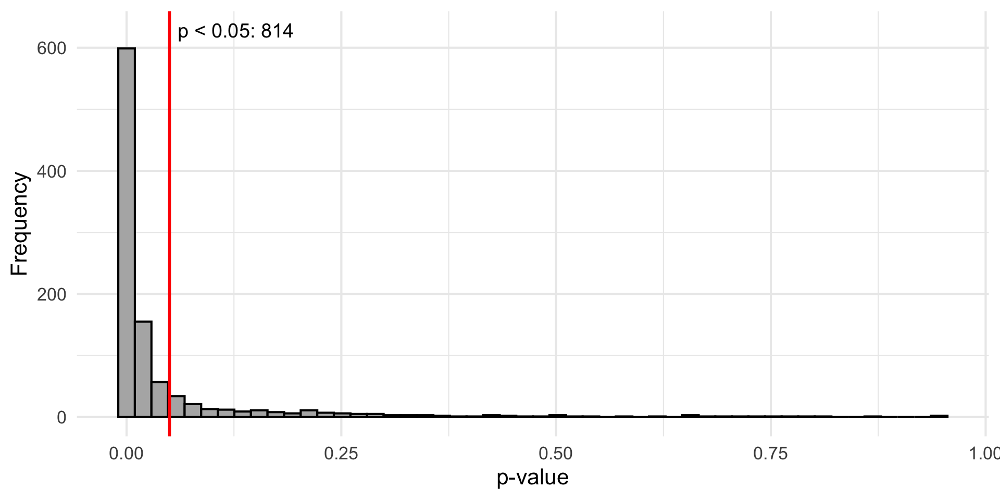
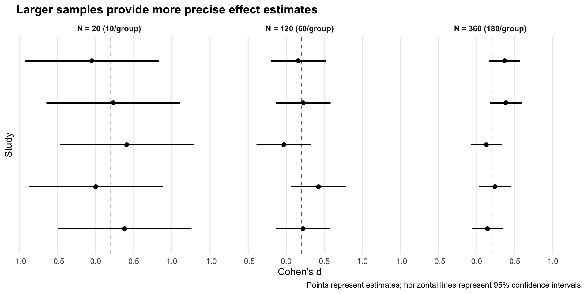
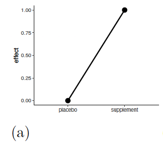
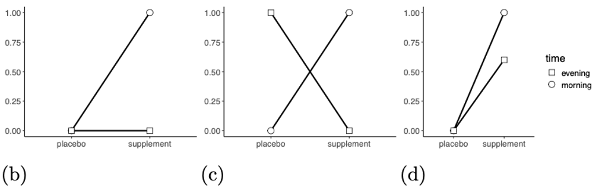
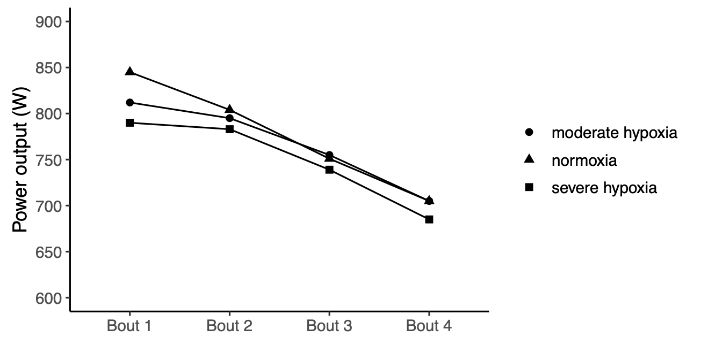
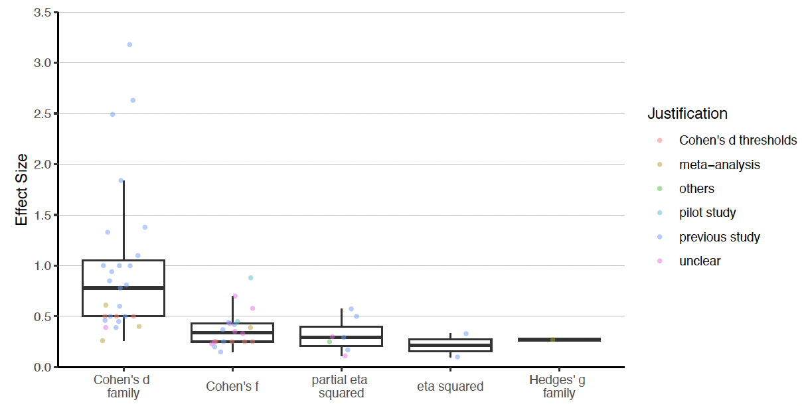
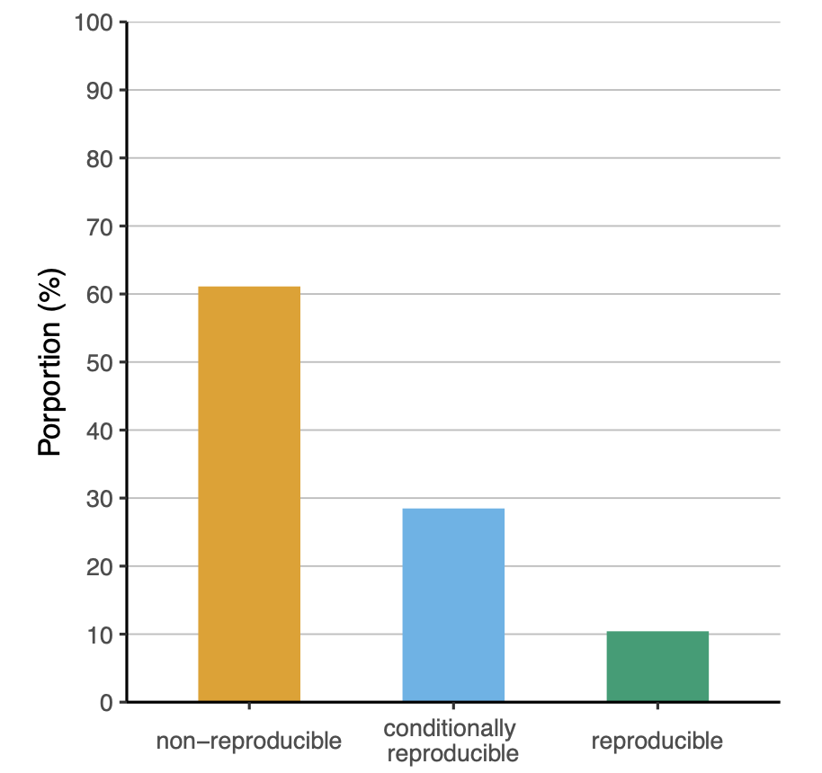
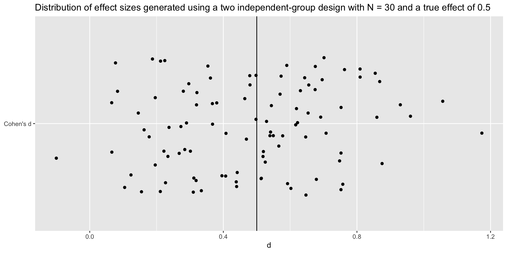

Two-sample t test power calculation
n = 81.65515
d = 0.5
sig.level = 0.01
power = 0.8
alternative = greater
NOTE: n is number in *each* groupFrom Guesswork to Rigor: Improving Power Analyses in Research
German Sport University Cologne
Cristian Mesquida
2026-10-22
Slides
Talk’s objectives
- Increase awareness of the importance of conducting valid power analyses
- Provide some practical guidance on how to conduct a valid power analysis
Possible outcomes
| Positive Result | Negative Result | |
|---|---|---|
| Effect Present (H₁) | True Positive Correct detection |
False Negative Type II Error (\(\beta\)) |
| Effect Absent (H₀) | False Positive Type I Error (\(\alpha\)) |
True Negative Correct rejection |
How to decrease the probability of a Type II error?
By increasing the statistical power of the study design
The power of a study is determined by the sample size, effect size, statistical test and alpha level
Types of Power Analysis
A Priori: calculates the sample size required to achieved a pre-specified power for a pre-specified effect size
Sensitivity (Effect Size): calculates the smallest effect size required to detect a pre-specified sample size with a pre-specified power
Sensitivity (Power): calculates power given a pre-specified effect size and sample size
Post Hoc: calculates the power associated with the observed effect size and the sample size actually obtained
Statistical power
Power can be defined as the probability of correctly detecting a true effect when it exists (1 − \(\beta\))
In frequentist statistics, it can be understood as the proportion of times we will obtain a significant result if the experiment is repeated many times.
Power in the long term
Suppose we repeat the same study 1000 times with 80% power to detect a true effect size of 0.2
About 800 (~80%) of these tests would yield a significant p-value

Why high statistical power is a desired property?
Increase the informational value of studies
If a study is designed with only 40% power, a non-significant result is difficult to interpret because it could reflect either:
The absence of a true effect (or an effect smaller than anticipated), or
Insufficient power to detect an effect that actually exists.
Improved precision (narrower 95% CI)

Average statistical power in sports and exercise science
In a sample of 350 hypothesis-testing articles:
The average power was 11% (Mesquida et al. 2025a)
The average sample size of 37 (Mesquida et al. 2025b)
Why is power so low?
144 out of 350 hypothesis-testing articles reported an a priori power analysis
Invalid power analyses:
Reporting a power analysis increased the sample size by ~ 1 (Mesquida et al. 2025b)
Reporting a power analysis did not significantly increase the proportion of studies supporting the hypothesis tested (Mesquida et al. 2025b)
When power analyses go wrong
Simple effects
What is the standardized effect size assuming a pooled standard deviation (\(SD_{pooled}\)) of 2?

Interaction effects
Researchers often use effect sizes from previous studies to inform their power analysis
However, they may overlook differences in study designs
For interaction effects, the effect size depends on the patter of means across conditions, not just the size of the group differences (Langenberg et al. 2023; Sommet et al. 2023)
Interaction effects in 2 x 2 factorial designs can be conceived as a difference-in-differences:
\[ d_{\text{int}} = \frac{(E_1 - C_1) - (E_2 - C_2)}{2 \times SD_{\text{pooled}}} \]
Assuming \(SD_{pooled}\) = 2, what is \(d_{int}\) for each plot?

- = ((1-0) - (0 - 0)) / 4 = 0.25
- = ((1 - 0) - (0 - 1)) / 4 = 0.5
- = ((1 - 0) - (0.6 - 1)) / 4 = 0.1
Wrong effect
The aim of the study was to compare the effect of hypoxia vs. normoxia
The sample size was estimated using a power analysis software G*Power based on the mean effect (d = 3.18) of the within-condition decrement to peak and mean power output during repeated 30-s Wingate efforts.10 The power analysis resulted in a calculated total sample size of 4 participants
Wrong effect

Distribution of effect sizes

In G*Power, the default value for Cohen’s d is 0.5 and Cohen’s f is 0.25
Wrong test
Power analyses might be conducted for a test that does not match the statistical test used in the study (Thibault et al. 2024; Bakker et al. 2020)
This is difficult to assess because power analyses are often poorly reported
Reporting of power analyses
- power type: a priori, power/sample size sensitivity, post hoc
- power: value between alpha and 100%
- sample size: number of subjects/items
- effect size: numeric value
- effect size metric: e.g., Cohen’s \(d\), \(r\), \(\eta_{p}^{2}\), raw
- statistical test: full specification
- alpha: 0-1, often assumed to be 0.05
- software: e.g., G*Power, Superpower, simulation!
We can do better
Reporting practices in 144 a priori power analyses
| Item | Not reported, % (n) |
|---|---|
| Primary outcome | 35 (50) |
| Effect size metric | 21 (30) |
| Effect size magnitude | 22 (32) |
| Statistical test | 60 (87) |
| Alpha | 17 (25) |
| Power | 9 (13) |
| Software | 4 (6) |
Reporting
How would you write up this power analysis?
Model Reporting Example
We conducted an a priori analysis to determine the sample size with 80% power to detect the smallest effect size of interest (SESOI), which was a Cohen’s d of 0.5 determined by a cost-benefit analysis of the intervention. We used the pwr package (Champely, 2020) for an independent samples t-test, assuming equal variance and using a one-tailed prediction, with a critical alpha of 0.01. This determined that we would need 82 subjects in each group.
The Reality
A sample size of 22 participants was predetermined to yield a power of 80% and to detect an effect of comparable size to previous studies using similar independent and dependent measures (CITE).
Reproducibility of power analyses

Mesquida et al. (2025b)
Effect size justification
| ES justification | Prevalence (n) |
|---|---|
| Previous study | 51% (58) |
| Not reported | 13% (15) |
| Unclear | 13% (15) |
| Cohen’s d thresholds | 8% (9) |
| Meta-analysis | 7% (8) |
| Pilot study | 4% (4) |
| Others | 3% (3) |
| SESOI | 1% (1) |
Expected effect size
Most common approach: use a previous study or meta-analysis to inform the expected effect size
Caveats:
Effect-size estimates are uncertain, particularly in small samples
Effect sizes may be inflated due to selection bias and underpowered study designs
The research context of previous studies (PICOS)
Random variation
Standard error (SE) of Cohen’s \(d\)
\[ SE_d = \sqrt{\frac{2}{n} + \frac{d^2}{4n}} \]
Effect sizes from small studies are less precise and more likely to deviate substantially from the true effect
Random variation

Bias in individual studies

Murphy et al. (2025)
Bias in meta-analyses

PICOS
Population: Is your target population the same as, or comparable to, the population studied in the original research?
Intervention: Is the intervention evaluated in the original study similar to the intervention of interest?
Comparison: Is the comparison or control group in the original study similar to the comparison relevant to your research question?
Outcome: Is the primary outcome measured in the original study similar to your outcome of interest?
Study Design: Is the study design used in the original research appropriate and comparable to the design needed to address your research question?
The PICOS dimensions need to be taken into account when selecting an effect size from a previous study
Cohen’s d thresholds
They were proposed as general benchmarks, not context-specific-standards:
d < 0.2 (small)
d < 0.5 (medium)
d > 0.5 (large)
These thresholds ignore the research context (PICOS)
Example: If comparing two treatments for weight loss, should the expected effect size be justified based on Cohen’s d psychology thresholds?
How do we move forward?
One way
Better training: improve expertise on conducting effect-size justification and power analysis
- However, no one can be an expert in everything, and time is limited
Specialization: develop expertise in specific methods and provide support to researchers who need it
Effect size justification
- With a typical sample size of 37, what is the smallest detectable effect that can reach statistical significance at \(\alpha\) = 0.05 in a two-sided \(t\)-test?
- Does an effect smaller than this become uninteresting?
- Power should be based on the smallest effect size of interest (SESOI) not the effect size you hope to observe or would like to detect
Simulation-based approach
Move away from point-and-click software such as G*Power
Encourages researchers to think carefully about their assumptions and the data-generating process
Makes assumptions explicit, transparent and verifiable
Example 1
- Design: Two groups with pre- and post-measurements
- Estimand: Adjusted mean difference at post-measurement
- Research question: Does the intervention group differ from the control group at post-measurement, after adjusting for baseline scores?
Simulation Example 1
set.seed(123)
n <- 30
nsim <- 5000
# Data generation process
mu <- data.frame(
Control = c(50, 50),
Intervention = c(50, 55),
row.names = c("pre", "post")
)
p_values <- replicate(nsim, {
# Simulate one dataset based on data genration process
dat <- sim_design(
within = list(time = c("pre", "post")),
between = list(group = c("Control", "Intervention")),
n = n,
mu = mu,
sd = 10,
r = 0.60,
long = FALSE,
plot = FALSE
)
# ANCOVA
model <- lm(post ~ group + pre, data = dat)
# Extract p-value for group effect
coef(summary(model))["groupIntervention", "Pr(>|t|)"]
})
# Estimated power
mean(p_values < 0.05, na.rm = TRUE)[1] 0.6634Example 2
Design: Two groups with pre-, post-1, and post-2 measurements
Estimand: Group × time interaction effect.
Research question: Does change over time differ between the two groups?
Simulation Example 2
set.seed(123)
n <- 250
nsim <- 100
cors <- c(0.70, 0.5, 0.70)
simulate_data <- function(n) {
# Data generation process
dat_a <- rnorm_multi(
n = n,
mu = c(30, 20, 28),
sd = c(10, 10, 10),
r = cors,
varnames = c("measure.1", "measure.2", "measure.3")
) |>
mutate(tx = "A")
dat_b <- rnorm_multi(
n = n,
mu = c(30, 20, 22),
sd = c(10, 10, 10),
r = cors,
varnames = c("measure.1", "measure.2", "measure.3")
) |>
mutate(tx = "B")
bind_rows(dat_a, dat_b) |>
mutate(subject.id = factor(row_number())) |>
pivot_longer(
cols = starts_with("measure."),
names_to = "time",
values_to = "measure"
) |>
mutate(
time = factor(time, levels = c("measure.1", "measure.2", "measure.3")),
tx = factor(tx)
)
}
p_values <- replicate(nsim, {
dat <- simulate_data(n)
# Mixed model with random intercept and interaction
model <- lmer(
measure ~ time * tx + (1 | subject.id),
data = dat
)
# Extract p-value for interaction effect
anova(model)["time:tx", "Pr(>F)"]
})
# Estimate power
mean(p_values < 0.05)[1] 1Machine-readable power analyses
Articles are represented as collections of machine-readable objects (Lakens and DeBruine 2021)
Encode hypotheses, analyses and power analyses as machine-readable objects
Link hypotheses to analyses and power analyses to improve transparency and rigor
Hypothesis object
Analysis object
"analyses": [
{
"id": "A1",
"code": "lm(y ~ group + pre) |> hypotheses(mod, "groupint <= 0")",
"software": "R version 4.5.2 (2025-10-31)",
"results": {
"statistic": 3.97,
"parameter": "",
"p.value": 0.00004,
"conf.int": [0.61; 1.79],
"estimate": 1.2,
"null.value": 0,
"stderr":0.3,
"alternative": "one.sided",
"method": "ANCOVA",
"data.name": "data"
}
}
]Power analysis object
Thanks!
May the power be with you
Contact me if you have any questions about power analyses (c.mesquida.caldentey@tue.nl)
References
Bakker, Marjan, Coosje L. S. Veldkamp, Olmo R. Van Den Akker, et al. 2020. “Recommendations in Pre-Registrations and Internal Review Board Proposals Promote Formal Power Analyses but Do Not Increase Sample Size.” PLOS ONE 15 (7): e0236079. https://doi.org/10.1371/journal.pone.0236079.
Lakens, Daniël, and Lisa M. DeBruine. 2021. “Improving Transparency, Falsifiability, and Rigor by Making Hypothesis Tests Machine-Readable.” Advances in Methods and Practices in Psychological Science 4 (2): 2515245920970949. https://doi.org/10.1177/2515245920970949.
Langenberg, Benedikt, Markus Janczyk, Valentin Koob, Reinhold Kliegl, and Axel Mayer. 2023. “A Tutorial on Using the Paired t Test for Power Calculations in Repeated Measures ANOVA with Interactions.” Behavior Research Methods 55 (5): 2467–84. https://doi.org/10.3758/s13428-022-01902-8.
Mesquida, Cristian, Jennifer Murphy, Joe Warne, and Daniël Lakens. 2025a. On the Replicability of Sports and Exercise Science Research: Assessing the Prevalence of Publication Bias and Studies with Underpowered Designs by a z-Curve Analysis. https://doi.org/10.51224/SRXIV.534.
Mesquida, Cristian, Jennifer Murphy, Joe Warne, and Daniël Lakens. 2025b. Prevalence, Reporting Practices, and Methodological Quality of a Priori Power Analyses in Sports and Exercise Science Research. July. https://doi.org/10.51224/SRXIV.575.
Murphy, Jennifer, Aaron R. Caldwell, Cristian Mesquida, et al. 2025. “Estimating the Replicability of Sports and Exercise Science Research.” Sports Medicine, ahead of print. https://doi.org/10.1007/s40279-025-02201-w.
Sommet, Nicolas, David L. Weissman, Nicolas Cheutin, and Andrew J. Elliot. 2023. “How Many Participants Do i Need to Test an Interaction? Conducting an Appropriate Power Analysis and Achieving Sufficient Power to Detect an Interaction.” Advances in Methods and Practices in Psychological Science 6 (3): 25152459231178728. https://doi.org/10.1177/25152459231178728.
Thibault, Robert T., Emmanuel A. Zavalis, Mario Malički, and Hugo Pedder. 2024. An Evaluation of Reproducibility and Errors in Published Sample Size Calculations Performed Using g*power. https://doi.org/10.1101/2024.07.15.24310458.